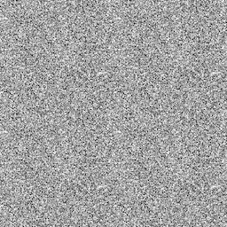

<!DOCTYPE html>
<html>
  <head>
    <title>My experiment</title>
    <script src="https://unpkg.com/jspsych@8.2.2"></script>
    <script src="https://unpkg.com/@jspsych/plugin-html-keyboard-response@2.1.0"></script>
    <script src="https://unpkg.com/@jspsych/plugin-image-keyboard-response@2.1.0"></script>
    <script src="https://unpkg.com/@jspsych/plugin-preload@2.1.0"></script>
    <script src="https://cdn.jsdelivr.net/npm/papaparse@5.4.1/papaparse.min.js"></script>
    <script src="https://pipe.jspsych.org/lib/pipe.js"></script>
    <script src="https://unpkg.com/@jspsych-contrib/plugin-pipe"></script>
    <link href="https://unpkg.com/jspsych@8.2.2/css/jspsych.css" rel="stylesheet" type="text/css" />
  </head>
  <body>
  <script>
    
    async function runExperiment() {
    const jsPsych = initJsPsych();
    const participant_id = jsPsych.randomization.randomID(8);
    var timeline = [];
    const save_data = {
      type: jsPsychPipe,
      action: "save",
      experiment_id: '7sBfg6Ud8xi2',
      filename: `${participant_id}.csv`,
      data_string: ()=>jsPsych.data.get().csv()
    };

    /* NEED TO FIND pleasant8,  pleasant9, unpleasant11, unpleasant12*/
    var preload = {
      type: jsPsychPreload,
      images: [
        'Mask/ampmask.jpg',
        'Primes/pleasant1.jpg','Primes/pleasant2.jpg','Primes/pleasant3.jpg','Primes/pleasant4.jpg','Primes/pleasant5.jpg',
        'Primes/pleasant6.jpg','Primes/pleasant7.jpg','Primes/pleasant10.jpg','Primes/pleasant11.jpg','Primes/pleasant12.jpg',
        'Primes/unpleasant_1.jpg','Primes/unpleasant_2.jpg','Primes/unpleasant_3.jpg','Primes/unpleasant_4.jpg','Primes/unpleasant_5.jpg',
        'Primes/unpleasant_6.jpg','Primes/unpleasant_7.jpg','Primes/unpleasant_8.jpg','Primes/unpleasant_9.jpg','Primes/unpleasant_10.jpg',
        'Targets/pic1.jpg','Targets/pic2.jpg','Targets/pic3.jpg','Targets/pic4.jpg','Targets/pic5.jpg',
        'Targets/pic6.jpg','Targets/pic7.jpg','Targets/pic8.jpg','Targets/pic9.jpg','Targets/pic10.jpg',
        'Targets/pic11.jpg','Targets/pic12.jpg','Targets/pic13.jpg','Targets/pic14.jpg','Targets/pic15.jpg',
        'Targets/pic16.jpg','Targets/pic17.jpg','Targets/pic18.jpg','Targets/pic19.jpg','Targets/pic20.jpg',
        'Targets/pic21.jpg','Targets/pic22.jpg','Targets/pic23.jpg','Targets/pic24.jpg','Targets/pic25.jpg',
        'Targets/pic26.jpg','Targets/pic27.jpg','Targets/pic28.jpg','Targets/pic29.jpg','Targets/pic30.jpg',
        'Targets/pic31.jpg','Targets/pic32.jpg','Targets/pic33.jpg','Targets/pic34.jpg','Targets/pic35.jpg',
        'Targets/pic36.jpg','Targets/pic37.jpg','Targets/pic38.jpg','Targets/pic39.jpg','Targets/pic40.jpg', 
        'Targets/pic41.jpg','Targets/pic42.jpg','Targets/pic43.jpg','Targets/pic44.jpg','Targets/pic45.jpg',
        'Targets/pic46.jpg','Targets/pic47.jpg','Targets/pic48.jpg','Targets/pic49.jpg','Targets/pic50.jpg',
        'Targets/pic51.jpg','Targets/pic52.jpg','Targets/pic53.jpg','Targets/pic54.jpg','Targets/pic55.jpg',
        'Targets/pic56.jpg','Targets/pic57.jpg','Targets/pic58.jpg','Targets/pic59.jpg','Targets/pic60.jpg',
        'Targets/pic61.jpg','Targets/pic62.jpg','Targets/pic63.jpg','Targets/pic64.jpg','Targets/pic65.jpg',
        'Targets/pic66.jpg','Targets/pic67.jpg','Targets/pic68.jpg','Targets/pic69.jpg','Targets/pic70.jpg',
        'Targets/pic71.jpg','Targets/pic72.jpg','Targets/pic73.jpg','Targets/pic74.jpg','Targets/pic75.jpg',
        'Targets/pic76.jpg','Targets/pic77.jpg','Targets/pic78.jpg','Targets/pic79.jpg','Targets/pic80.jpg'
      ],
    };
    timeline.push(preload);


    var fixation = {
      type: jsPsychHtmlKeyboardResponse,
      stimulus: '<div style="font-size:60px;">+</div>',
      choices: "NO_KEYS",
      trial_duration: 500
    };

    const IMG_PX = 400;
    const pleasantPrimes = [
      'Primes/pleasant1.jpg','Primes/pleasant2.jpg','Primes/pleasant3.jpg','Primes/pleasant4.jpg','Primes/pleasant5.jpg',
      'Primes/pleasant6.jpg','Primes/pleasant7.jpg','Primes/pleasant10.jpg','Primes/pleasant11.jpg','Primes/pleasant12.jpg'
    ];
    const unpleasantPrimes = [
      'Primes/unpleasant_1.jpg','Primes/unpleasant_2.jpg','Primes/unpleasant_3.jpg','Primes/unpleasant_4.jpg','Primes/unpleasant_5.jpg',
      'Primes/unpleasant_6.jpg','Primes/unpleasant_7.jpg','Primes/unpleasant_8.jpg','Primes/unpleasant_9.jpg','Primes/unpleasant_10.jpg'
    ];
    const setTargets = Array.from({ length: 80 }, (_, i) => `Targets/pic${i + 1}.jpg`);

    //Combine primes and
    const allPrimesForExamples = pleasantPrimes.concat(unpleasantPrimes);
    const allTargetsForExamples = setTargets.concat(setTargets);

    // Sequence without replacement and reset as needed
    function sequenceNoReplacementWithReset(pool, total) {
      const out = [];
      let bag = [];
      while (out.length < total) {
        if (bag.length === 0) {
          bag = jsPsych.randomization.shuffle(pool.slice());
        }
        out.push(bag.pop());
      }
      return out;
    }
    const test_block = 10;      
    const first_person_trials = 34;  // 17 pleasant + 17 unpleasant
    const third_person_trials = 36;  // 18 pleasant + 18 unpleasant
    const total_trials = test_block + first_person_trials + third_person_trials;
    const valences = jsPsych.randomization.shuffle(
      new Array(40).fill('pleasant').concat(new Array(40).fill('unpleasant'))
);


    const allTargets = sequenceNoReplacementWithReset(
      [...setTargets], 
      total_trials
    );

    const pleasantCount = 40;
    const unpleasantCount = 40;
    const pleasantPrimeSeq = sequenceNoReplacementWithReset(pleasantPrimes, pleasantCount);
    const unpleasantPrimeSeq = sequenceNoReplacementWithReset(unpleasantPrimes, unpleasantCount);

    let pIdx = 0, nIdx = 0;
    const all_stimuli = valences.map((v, i) => {
      const primeImg = v === 'pleasant' ? pleasantPrimeSeq[pIdx++] : unpleasantPrimeSeq[nIdx++];
      const targetImg = allTargets[i];
      return { valence: v, prime: primeImg, target: targetImg };
    });
    
    // Shuffle and split
    const shuffledStimuli = jsPsych.randomization.shuffle(all_stimuli.slice());

    // Split into blocks
    const test_block_stimuli = shuffledStimuli.slice(0, test_block);
    const first_person_block_stimuli = shuffledStimuli.slice(test_block, test_block + first_person_trials);
    const third_person_block_stimuli_seed = shuffledStimuli.slice(test_block + first_person_trials, test_block + first_person_trials + third_person_trials);

    console.log('Test trials:', test_block_stimuli.length);
    console.log('First-person trials:', first_person_block_stimuli.length);

    const countValence = (arr) => ({
    pleasant: arr.filter(t => t.valence === 'pleasant').length,
    unpleasant: arr.filter(t => t.valence === 'unpleasant').length
    });
    console.log('First-person balance:', countValence(first_person_block_stimuli));
    console.log('Third-person balance:', countValence(third_person_block_stimuli_seed));


    const prime = {
      type: jsPsychImageKeyboardResponse ,
      stimulus: jsPsych.timelineVariable('prime'),
      choices: "NO_KEYS",
      trial_duration: 100,
      stimulus_width: IMG_PX,
      data: {
        phase: 'prime',
        valence: jsPsych.timelineVariable('valence'),
        prime_image: jsPsych.timelineVariable('prime')
      }
    };

    const blank = {
      type: jsPsychHtmlKeyboardResponse,
      stimulus: "",
      choices: "NO_KEYS",
      trial_duration: 100,
      data: { phase: 'blank' }
    };


    const target = {
      type: jsPsychImageKeyboardResponse,
      stimulus: jsPsych.timelineVariable('target'),
      choices: "NO_KEYS",
      trial_duration: 200,
      stimulus_width: IMG_PX,
      data: { phase: 'target' }
    };

    const judgement_question = {
        type: jsPsychHtmlKeyboardResponse,
        stimulus: '',
        choices: ['e', 'i'],
        prompt:  '<p>Press <b>E</b> if unpleasant, press <b>I</b> if pleasant.</p>'
    };

    const influence_question = {
      type: jsPsychHtmlKeyboardResponse,
      stimulus: 'Did the prime influence your judgment?<br><br>',
      choices: ['0', '1'],
      prompt: 'Press <b>1</b> if yes. If not, press <b>0</b>.'
    };

    

    const CSV_URL = 'https://raw.githubusercontent.com/milkawaniak/waniak2025/main/materials/Kurdi%20et%20al.%20(2023)%20Exp.%203%20Long-format%20AMP.csv';
    function firstKey(obj, candidates) {
      for (const k of candidates) if (k in obj) return k;
      return null;
    }
    function normalizeStr(v) {
      return String(v ?? '').trim().toLowerCase();
    }

    const response = 'trial_response';
    
    function baseName(p) {
      return String(p || '').split('/').pop();
    }
    function labelFromKey(k) { 
      const c = String(k ?? '').trim().toLowerCase();
      if (c === '1' || c === 'pleasant') return 'Pleasant'; 
      if (c === '0' || c === 'unpleasant') return 'Unpleasant'; return 'Unknown'; }

    async function buildThirdPersonTrials(numTrials) {
      const text = await fetch(CSV_URL).then(r => r.text());
      const parsed = Papa.parse(text, { header: true, skipEmptyLines: true });
      const rows = parsed.data;

      // Pick a random session
      const sessions = Array.from(new Set(rows.map(r => r.session_id).filter(Boolean)));
      if (sessions.length === 0) throw new Error('No session_id values found in CSV.');
      const picked = jsPsych.randomization.sampleWithoutReplacement(sessions, 1)[0];

      const rowsForSession = rows.filter(r => r.session_id === picked);
      console.log('Picked session:', picked, 'rows in session:', rowsForSession.length);

      // Build trials DIRECTLY from CSV rows - use their exact prime/target combinations
      const trials = rowsForSession.map(r => {
      const primeFile = baseName(r.prime || '');
      const targetFile = baseName(r.target || '');
    
      // Determine valence from prime filename
      const valence = primeFile.toLowerCase().includes('unpleasant') 
                    ? 'unpleasant' 
                    : 'pleasant';
    
      // Get the response
      const resp = String(r.trial_response || r.response || '').trim();
      const label = labelFromKey(resp);
    
      console.log('Building trial from CSV:', {
        prime: primeFile,
        target: targetFile,
        response: resp,
        label: label
      });
    
      return {
        valence: valence,
        prime: 'Primes/' + primeFile,
        target: 'Targets/' + targetFile,
        past_response_label: label,
        past_session_id: picked
      };
    });

  console.log('Built', trials.length, 'trials from CSV');
  
  // Shuffle and return requested number
  const shuffled = jsPsych.randomization.shuffle(trials);
  const selected = shuffled.slice(0, numTrials);
  
  console.log('Returning', selected.length, 'trials');
  console.log('First trial example:', selected[0]);
  
  return selected;
}


  
  

  
  const third_person_influence_question = {
    type: jsPsychHtmlKeyboardResponse,
    choices: ['0', '1'],
    on_start: function(trial) {
      // Access the evaluatedTimelineVariable directly
      const currentVars = jsPsych.evaluateTimelineVariable('past_response_label');
      const label = currentVars || 'Unknown';
    
      console.log('on_start - Retrieved label:', label, 'type:', typeof label);
    
      // Set the stimulus with the actual label value
      trial.stimulus = `Did the prime influence the past participant's judgment?<br><br>
      The past participant's response on this trial was: <b>${String(label)}</b>.<br><br>
      Press the 1 key if you think that the past participant's response to the target was influenced by the prime,
      and press 0 if not.`;
    
      // Also store it in data for later analysis
      trial.data = {
        past_response_label: label,
        past_session_id: jsPsych.evaluateTimelineVariable('past_session_id')
      };
    }
  };
  
    const third_person_judgement_question = { 
      type: jsPsychHtmlKeyboardResponse,
      stimulus: '',
      choices: [' '],
      prompt: 'Press <b>space bar</b> to continue'
    };


    /* define welcome message trial */
    var goals = {
      type: jsPsychHtmlKeyboardResponse,
      stimulus: `<h1>Welcome to the experiment!</h1><br><br>
      <h2>Consent to Participate</h2>
      <p>You are being asked to participate in a psychology experiment.</p>
      <p>Risks: The main risk is that you might get bored while completing the task.</p>
      <p>Benefits: There are no direct benefits, but your participation will help us learn about how people judge visual images.</p>
      <p>By pressing any key, you agree to participate in this study voluntarily.</p>
      <p>If you do not wish to participate, you may close this browser window now.</p>
      Press any key to begin.`,
    };
    timeline.push(goals);

    var instructions_0 = {
      type: jsPsychHtmlKeyboardResponse,
      stimulus: `This study examines how people make simple judgments.<br><br>
      During the first task, you will see pairs of pictures appear one after the other.<br><br>
      The first picture will be a real-life image and the second picture will be an abstract painting.<br><br>
      <b>The first image is simply a warning signal for the abstract painting and should be ignored.</b><br><br>
      Your task is to <b>judge how visually pleasant each abstract painting is.</b>`,
    };
    timeline.push(instructions_0);

    var instructions_1= {
      type: jsPsychHtmlKeyboardResponse,
      stimulus: `
      Put your index fingers on the E and I keys of your keyboard.<br><br>
      If the abstract painting is <b>less visually pleasant than average</b>, please press the <b>E key on the left</b>.<br><br>
      If the abstract painting is <b>more visually pleasant than average</b>, please press the <b>I key on the right</b>.<br><br>
      Note that the first (real-life) image can sometimes bias judgments of the abstract paintings.<br><br>
      <b>Please try your absolute best not to let the real-life images bias your judgment of the abstract paintings.</b>`,
      post_trial_gap: 1000
    };
    timeline.push(instructions_1);

    var instructions_2= {
      type: jsPsychHtmlKeyboardResponse,
      stimulus: `After each trial we will ask you whether your judgment of the abstract painting was influenced by the real-life image.<br><br>
        <b>If your judgment of the abstract painting was influenced by the image that came before it, then press the 1 key.<br><br>
        If your judgment of the abstract painting was <u>NOT</u> influenced by the image that came before it, then press the 0 key.<b>`,
            post_trial_gap: 1000
    };
    timeline.push(instructions_2);

    const examplePrimes = sequenceNoReplacementWithReset(allPrimesForExamples, 6);
    const exampleTargets = sequenceNoReplacementWithReset(allTargetsForExamples, 6);
    function makeImageCells(list) {
      return list.map(function(src) {
        return '<td style="padding:6px; text-align:center;">' +
          '' +
          '</td>';
        }).join('');
      }

    const instructions_3 = {
      type: jsPsychHtmlKeyboardResponse, 
      choices: [' '],
      post_trial_gap: 1000,
      stimulus: ` <div style="max-width:1000px; margin: 0 auto; text-align:center;"> <p>Here are some examples of the types of pictures that you will see during the task:</p> <table style="margin: 10px auto; border-collapse: collapse;"> <tr> <th colspan="6" style="padding:8px; font-size:16px; text-align:center;"> Real-life images </th> </tr> <tr>${makeImageCells(examplePrimes)}</tr> <tr> <th colspan="6" style="padding:12px 8px 8px; font-size:16px; text-align:center;"> Abstract paintings </th> </tr> <tr>${makeImageCells(exampleTargets)}</tr> </table> <p>Press the<b>space bar</b> to continue.</p> </div> `
      };
    timeline.push(instructions_3);

    
    var instructions_4= {
      type: jsPsychHtmlKeyboardResponse,
      stimulus:`We will now provide you with an opportunity to practice the task. Remember: You should judge whether each abstract <br><br>
      painting is more or less visually pleasant than average by pressing the E or the I key. And if you think your <br><br>
      rating of the abstract paintingwas influenced by the real-life image that appeared just before it, press the 1 key.<br><br>
      And if it was not influenced by the real-life image, press the 0 key. When you are ready to try a few practice <br><br>
      responses, hit the <b>space bar</b>.<br><br>
      Ready? Press the <b>space bar</b> to begin.`,
            post_trial_gap: 1000
    };
    timeline.push(instructions_4);
    
    var instructions_5= {
      type: jsPsychHtmlKeyboardResponse,
      stimulus:`Good! The test phase will now begin. Keep going as before.<br><br>
      As a reminder: If the abstract painting is less visually pleasant than average, press the E key. And if it is more visually pleasant than average, press the I key.<br><br>
      Ready? Press the <b>space bar</b> to begin.`,
      post_trial_gap: 1000
    };
    timeline.push(instructions_5);

    /* 10 TEST TRIALS */
    const test_procedure = {
      timeline: [fixation, prime, blank, target, judgement_question, influence_question],
      timeline_variables: test_block_stimuli,
      randomize_order: false
    };
    timeline.push(test_procedure);
    
    const instructions_experimental = {
      type: jsPsychHtmlKeyboardResponse,
      stimulus: "You completed test trials! Experimental trials will start now.<br><br>Press the <b>space bar</b> to begin.",
      choices: [' '],
      post_trial_gap: 1000
    };
    timeline.push(instructions_experimental);
    
    const first_person_procedure = {
      timeline: [fixation, prime, blank, target, judgement_question, influence_question],
      timeline_variables: first_person_block_stimuli,
      randomize_order: false
    };
    timeline.push(first_person_procedure);


    var instructions_6= {
      type: jsPsychHtmlKeyboardResponse,
      stimulus:`During the second and final task, you will see how a past participant in a study just like this one responded to the abstract paintings.<br><br>
      Just like you, this participant saw two pictures back to back: first a real-life image and then an abstract painting.<br><br>
      <b>Just like you, this participant was told that the first image is simply a warning signal for the abstract painting and should be ignored.<b><br><br>
        The participant’s task, just like yours, was to <b>judge how visually pleasant each abstract painting is. <b>`,
      post_trial_gap: 1000
    };
    timeline.push(instructions_6);

    var instructions_7= {
      type: jsPsychHtmlKeyboardResponse,
      stimulus: `If the abstract painting was <b>less visually pleasant than average</b>, 
      the participant pressed the <b>E key on the left</b>.<br><br>  
      If the abstract painting was <b>more visually pleasant than average</b>, the participant pressed the <b>I key on the right</b>.<br><br>     
      The participant was warned that the first (real-life) image could sometimes bias judgments of the abstract paintings.<br><br> 
      <b>Therefore, the participant was asked to try their absolute best not to let the real-life images bias their judgment of the abstract paintings.</b>`,
      post_trial_gap: 1000
    };
    timeline.push(instructions_7);

    var instructions_8= {
      type: jsPsychHtmlKeyboardResponse,
      stimulus:`On each trial, we will show you the real-life image and the abstract painting that the previous participant saw.<br><br>
      Afterwards, we will tell you whether the participant rated the abstract painting as <b>Pleasant</b> or as <b>Unpleasant</b><br><br>
        Similar to the previous task, your job will be to tell us whether you think the other participant’s judgment of the abstract painting was influenced by the real-life image.<br><br>
        If you think that the participant’s judgment of the abstract painting was influenced by the image that came before it, then press the 1 key.<br><br>
        And if you think that the participant’s judgment of the abstract painting was NOTinfluenced by the image that came before it, then press the 0 key.`,
      post_trial_gap: 1000
    };
    timeline.push(instructions_8);

    var instructions_9= {
      type: jsPsychHtmlKeyboardResponse,
      stimulus:`Remember: On each trial, we will show you the real-life image and the abstract painting that a previous participant saw. Afterwards, you will be shown if they rated the abstract painting as pleasant or as unpleasant.<br><br>
      If you think that the participant’s rating of the abstract painting was influenced by the real-life image that appeared just before it, press the 1 key. And if you think it was notinfluenced by the real-life image, press the 0 key.<br><br>
      Ready? Press the space barto begin.`,
      post_trial_gap: 1000
    };
    timeline.push(instructions_9);

    let third_person_block_stimuli = [];
    try {
      third_person_block_stimuli = await buildThirdPersonTrials(third_person_trials);
      console.log('Third-person trials loaded:', third_person_block_stimuli.length);
  if (third_person_block_stimuli.length > 0) {
    console.log('Third-person example:', third_person_block_stimuli[0]);
    console.log('Balance:', countValence(third_person_block_stimuli));
  }
} catch (err) {
  console.error('Error building third-person trials:', err);
  alert('Could not load third-person trials. The experiment will continue without them.');
  

    if (third_person_block_stimuli.length > 0) {
      console.log('Third-person example:', {
        key: baseName(third_person_block_stimuli[0].prime) + '|' + baseName(third_person_block_stimuli[0].target),
        stored: third_person_block_stimuli[0]?.past_response_label
      });
    } else {
      console.warn('No third-person trials returned.');
    }
  }

  const third_person_timeline = third_person_block_stimuli.map(item => {
    return {
      timeline: [
        fixation,
        {
          type: jsPsychImageKeyboardResponse,
          stimulus: item.prime,
          choices: "NO_KEYS",
          trial_duration: 100,
          stimulus_width: IMG_PX,
          data: {
            phase: 'prime',
            valence: item.valence,
            prime_image: item.prime
          }
        },
        blank,
        {
          type: jsPsychImageKeyboardResponse,
          stimulus: item.target,
          choices: "NO_KEYS",
          trial_duration: 200,
          stimulus_width: IMG_PX,
          data: { phase: 'target' }
        },
        third_person_judgement_question,
        {
          type: jsPsychHtmlKeyboardResponse,
          choices: ['0', '1'],
          stimulus: `Did the prime influence the past participant's judgment?<br><br>
          The past participant's response on this trial was: <b>${item.past_response_label}</b>.<br><br>
          Press the 1 key if you think that the past participant's response to the target was influenced by the prime,
          and press 0 if not.`,
          data: {
            past_response_label: item.past_response_label,
            past_session_id: item.past_session_id
          }
        }
      ]
    };
  });

// Push all trials to timeline
  third_person_timeline.forEach(trial => timeline.push(trial));


    const end_screen = {
      type: jsPsychHtmlKeyboardResponse,
      stimulus: `
      <h2>Thank you for participating!</h2>
      <p>Your responses have been recorded.</p>
      <p>You may now close this window.</p>
      `,
      choices: "ALL_KEYS"
    };
    timeline.push(end_screen);
    timeline.push(save_data);
    await jsPsych.run(timeline);
    }

    runExperiment();

    </script>
  </body>
</html>
